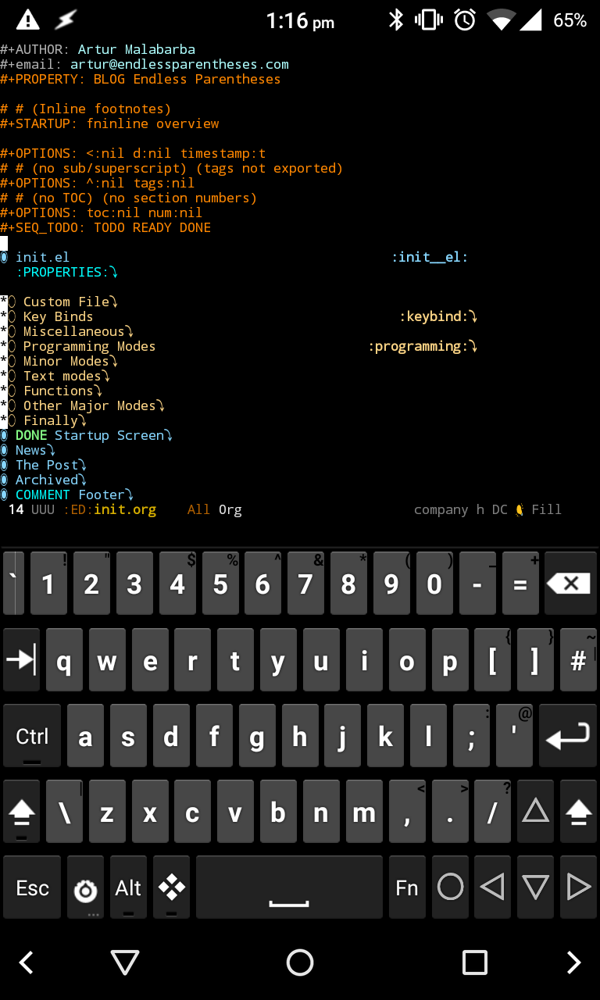
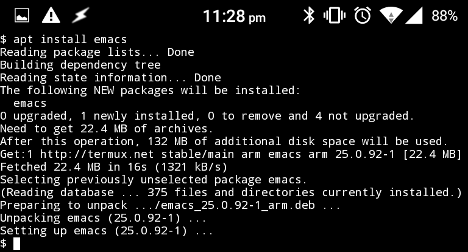

As Android phones rise in power, bluetooth keyboards become cheaper, and your
addiction to Emacs grows, it’s only natural that you start thinking of combining
the three. Fortunately for you, it’s not as hard as it used to be. In fact, it’s
perfectly possible to reproduce (most of) your desktop config, if you know how
to get past a few obstacles.
I was going to precede these instructions with a short tale, but I got a little
carried a way and it grew a little too long. Because of that, I’ll give you
the instructions first and let you decide whether to read my self-indulgent
delusions below.
I was surprised at how well this worked in the end. Even Beacon, which is a
largely graphical package, worked out of the box (if a bit laggy).
Update 11 Apr 2016
Fredrik Fornwall has patched the Emacs package on Termux to no longer require
the tmp dir workarounds. So now it’s easy as pie to get Emacs on your Android.
A tale of two thumbs
Last night, in a fit of boredom, far away from my laptop and from any physical
keyboard, I did what any reasonable person would have done: decided to install
Emacs on my phone. My last attempt at crossing this bridge was over a year ago,
and resulted in nothing but absolute failure. Still… Something felt different
this time. Something felt right.
My first stop was an obvious one. There’s an Emacs app on the play store
claiming to do exactly what I needed. On my previous attempts, this app had
given inconsistent results, crashing more often than running. This time,
however, it wouldn’t even install. The Play Store just greeted me with a
“Failure to install” error instead.
Not all was lost, though. A generous comment (with an less-than-generous rating)
points me in a new direction. Termux, my beacon of hope, is a robust app that
claims to offer “powerful terminal emulation with an extensive Linux package
collection”.
After installing it, I am indeed greeted with a terminal emulator, but I’m not
impressed. I’ve used terminal apps before. Tentatively, I run the commands (as
instructed by the man-from-the-review).
Surprisingly, it played out even better than expected. Installing Emacs would
have been fine, but installing version 25 is exceptional! My init file is sure
to be incompatible with Emacs 24, but now that we have 25… Dare I even hope?
Could I reproduce my entire setup on this minute device?
Before proceeding, I hopped back over to the play store and installed the
Hacker’s keyboard, to get access to modifier keys. Then, starting emacs from the
terminal worked as expected, if a bit slowly, but my streak of good fortune was
about to end.
The first command I issued (M-xlist-packages) failed with a cryptic message
about nonexistent file in /tmp/asdlij198h1 (/this should not happen to you
thanks to Fredrik’s patch). The package menu displayed, but refused to refresh.
So I C-z out of Emacs, and try mkdir /tmp/.
Permission denied
Ok, I should have expected that. sudo doesn’t work either, so I issue fg to
go back to Emacs and try a different approach.
(setqtemporary-file-directory"~/tmp/")
Now list-packages again, and it works! I try to install company from the
gnu repository, and it works too! In fact, everything works. I run M-xglobal-company-mode and it’s all there, popup menu and everything.
At this point I’m probably way more satisfied with myself than I should for such
a senseless pursuit, but I’m too high to realize.
Next step is to port over my real init file. Fortunately, I keep it sync’d via
Dropbox, so it’s easy to make available on the phone. Just open the Dropbox app,
find my init.el, and mark it to be “Available offline”. Same thing for my
init.org. Dropbox saves the files somewhere deep inside its own data
directory, and automatically syncs them up when you make local changes (though
you have to manually ask it to pull down remote changes).
Back on Termux, I send Emacs to the background again with C-z, and
cd ~/.emacs.d
ln -s /sdcard/Android/data/com.dropbox.android/files/SOME_GIBBERISH/.emacs.d/init.el
ln -s /sdcard/Android/data/com.dropbox.android/files/SOME_GIBBERISH/.emacs.d/init.org
Actually finding the file took a bit of trial and error. After getting to the
files directory I had to tab-complete my way through several gibberish
directory names before finding the right one.
fg and we’re back in Emacs.
The next obstacle are the packages. I know my init file is not going to load
before I install the necessary packages. Sadly, I never had the foresight
of rewriting my configuration in something like use-package, but there’s
something almost as good. Like I’ve mentioned before, Emacs 25
keeps track of user-selected packages, so I was able to go into my
custom-set-variables and find a sizeable list under
package-selected-packages. With no further ceremony, I just evaluate the whole
thing with C-M-x, and issue M-xpackage-install-selected-packages.
This takes a while…
This is a good moment to find out if Termux works well in the background. Switch
to the Youtube app, watch a couple of videos, switch back… And it worked!
This is it now — the moment of truth. I’m still feeling high and mighty after
all this success, but I have to respect the odds. My init file has 4 thousand
lines of Elisp and involves over 100 packages. That’s a whole lot of
could-go-wrong potential.
I take a deep breath and mentally try to lower my expectations. I C-x C-c back
to the terminal, and then carefully type emacs followed by ↵, only to plunge
head-first into an error.
Something about the tmp directory again. Haven’t I solved this one? A bit more
digging reveals it’s being triggered by (server-start), because
server-socket-dir is bound to /tmp/emacs1000. The comments above the
variable explain why.
;; We do not use `temporary-file-directory' here,;; because emacsclient does not read the init file.(defvarserver-socket-dir...)
That’s understandable, but it doesn’t help me. Impatiently, I just wrap the call
to server-start in ignore-errors and try again…
Another error. This time it’s complaining that set-fringe-mode is a void
function. That’s a lot easier to understand. The Emacs binary provided in Termux
is compiled for terminal (why wouldn’t it be?), so many graphical functions
aren’t defined at all. It’s also easy to solve. Just add a conditional around
the function call.
A third time. C-x C-cemacs↵… And it works! No more errors. Not even a
warning! My beloved darktooth theme is unrecognizable, but all the other
indicative signs of my Emacs setup are there. Smart-mode-line discretely smiles
at me from the bottom of the screen. Beacon eagerly blinks at me as soon as I
start scrolling. And the unmistakable coziness of my personal keybinds reach me
even through the limited interface of a touchscreen-keyboard.
As we get to this point, a lesser person might feel an anticlimax — a hint of
a “what for?”, perhaps. But not me. I just feel safe and reassured, knowing
that, wherever I am and whenever I need it, Emacs will always be sitting in my
pocket.
Now I just need to get myself one of those bluetooth keyboards I mentioned…

Running Emacs on Android
06 Apr 2016, by Artur Malabarba.Emacs Ports post series
As Android phones rise in power, bluetooth keyboards become cheaper, and your addiction to Emacs grows, it’s only natural that you start thinking of combining the three. Fortunately for you, it’s not as hard as it used to be. In fact, it’s perfectly possible to reproduce (most of) your desktop config, if you know how to get past a few obstacles.
I was going to precede these instructions with a short tale, but I got a little carried a way and it grew a little too long. Because of that, I’ll give you the instructions first and let you decide whether to read my self-indulgent delusions below.
Start it, and run:
init.elfile to your phone (read below for a way to keep it synchronized).emacs(celebrate a little!).
I was surprised at how well this worked in the end. Even Beacon, which is a largely graphical package, worked out of the box (if a bit laggy).
Update 11 Apr 2016
Fredrik Fornwall has patched the Emacs package on Termux to no longer require the
tmpdir workarounds. So now it’s easy as pie to get Emacs on your Android.A tale of two thumbs
Last night, in a fit of boredom, far away from my laptop and from any physical keyboard, I did what any reasonable person would have done: decided to install Emacs on my phone. My last attempt at crossing this bridge was over a year ago, and resulted in nothing but absolute failure. Still… Something felt different this time. Something felt right.
My first stop was an obvious one. There’s an Emacs app on the play store claiming to do exactly what I needed. On my previous attempts, this app had given inconsistent results, crashing more often than running. This time, however, it wouldn’t even install. The Play Store just greeted me with a “Failure to install” error instead.
Not all was lost, though. A generous comment (with an less-than-generous rating) points me in a new direction. Termux, my beacon of hope, is a robust app that claims to offer “powerful terminal emulation with an extensive Linux package collection”.
After installing it, I am indeed greeted with a terminal emulator, but I’m not impressed. I’ve used terminal apps before. Tentatively, I run the commands (as instructed by the man-from-the-review).

Surprisingly, it played out even better than expected. Installing Emacs would have been fine, but installing version 25 is exceptional! My init file is sure to be incompatible with Emacs 24, but now that we have 25… Dare I even hope? Could I reproduce my entire setup on this minute device?
Before proceeding, I hopped back over to the play store and installed the Hacker’s keyboard, to get access to modifier keys. Then, starting
emacsfrom the terminal worked as expected, if a bit slowly, but my streak of good fortune was about to end.The first command I issued (M-x
list-packages) failed with a cryptic message about nonexistent file in/tmp/asdlij198h1(/this should not happen to you thanks to Fredrik’s patch). The package menu displayed, but refused to refresh. So I C-z out of Emacs, and trymkdir /tmp/.Ok, I should have expected that.
sudodoesn’t work either, so I issuefgto go back to Emacs and try a different approach.Now
list-packagesagain, and it works! I try to installcompanyfrom thegnurepository, and it works too! In fact, everything works. I run M-xglobal-company-modeand it’s all there, popup menu and everything.At this point I’m probably way more satisfied with myself than I should for such a senseless pursuit, but I’m too high to realize.
Next step is to port over my real init file. Fortunately, I keep it sync’d via Dropbox, so it’s easy to make available on the phone. Just open the Dropbox app, find my
init.el, and mark it to be “Available offline”. Same thing for myinit.org. Dropbox saves the files somewhere deep inside its own data directory, and automatically syncs them up when you make local changes (though you have to manually ask it to pull down remote changes).Back on Termux, I send Emacs to the background again with C-z, and
Actually finding the file took a bit of trial and error. After getting to the
filesdirectory I had to tab-complete my way through several gibberish directory names before finding the right one.fgand we’re back in Emacs.The next obstacle are the packages. I know my init file is not going to load before I install the necessary packages. Sadly, I never had the foresight of rewriting my configuration in something like
use-package, but there’s something almost as good. Like I’ve mentioned before, Emacs 25 keeps track of user-selected packages, so I was able to go into mycustom-set-variablesand find a sizeable list underpackage-selected-packages. With no further ceremony, I just evaluate the whole thing with C-M-x, and issue M-xpackage-install-selected-packages.This takes a while…
This is a good moment to find out if Termux works well in the background. Switch to the Youtube app, watch a couple of videos, switch back… And it worked!
This is it now — the moment of truth. I’m still feeling high and mighty after all this success, but I have to respect the odds. My init file has 4 thousand lines of Elisp and involves over 100 packages. That’s a whole lot of could-go-wrong potential.
I take a deep breath and mentally try to lower my expectations. I C-x C-c back to the terminal, and then carefully type
emacsfollowed by ↵, only to plunge head-first into an error.Something about the
tmpdirectory again. Haven’t I solved this one? A bit more digging reveals it’s being triggered by(server-start), becauseserver-socket-diris bound to/tmp/emacs1000. The comments above the variable explain why.That’s understandable, but it doesn’t help me. Impatiently, I just wrap the call to
server-startinignore-errorsand try again…Another error. This time it’s complaining that
set-fringe-modeis a void function. That’s a lot easier to understand. The Emacs binary provided in Termux is compiled for terminal (why wouldn’t it be?), so many graphical functions aren’t defined at all. It’s also easy to solve. Just add a conditional around the function call.A third time. C-x C-c
emacs↵… And it works! No more errors. Not even a warning! My beloveddarktooththeme is unrecognizable, but all the other indicative signs of my Emacs setup are there. Smart-mode-line discretely smiles at me from the bottom of the screen. Beacon eagerly blinks at me as soon as I start scrolling. And the unmistakable coziness of my personal keybinds reach me even through the limited interface of a touchscreen-keyboard.As we get to this point, a lesser person might feel an anticlimax — a hint of a “what for?”, perhaps. But not me. I just feel safe and reassured, knowing that, wherever I am and whenever I need it, Emacs will always be sitting in my pocket.
Now I just need to get myself one of those bluetooth keyboards I mentioned…
Tags: android, emacs
Improving Projectile with extra commands »
« Eval-result-overlays in Emacs-lisp
Related Posts
Emacs Documentation v1.3 Android App: Built-in Viewer and Theme Choice in android
Content © 2016, All rights reserved. Icons under CC3.0.